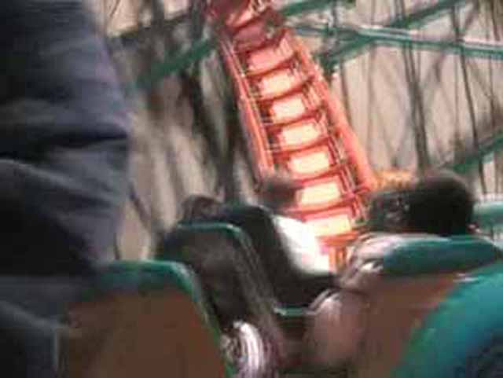
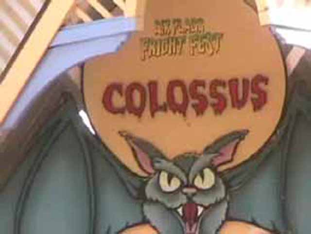
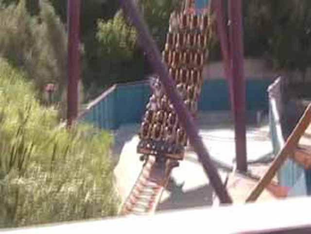
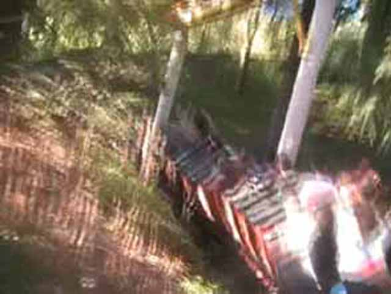
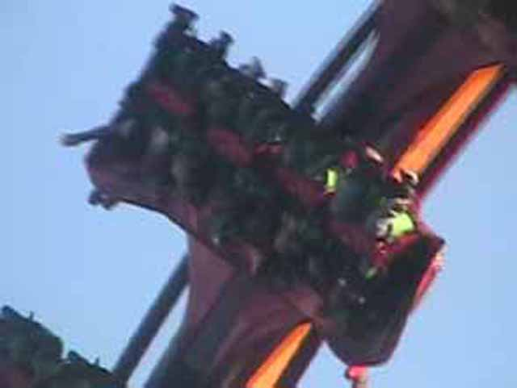
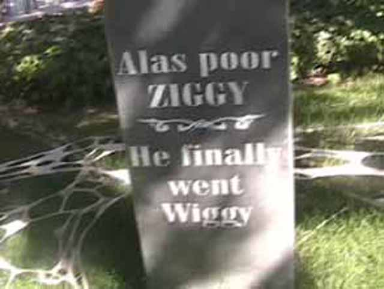
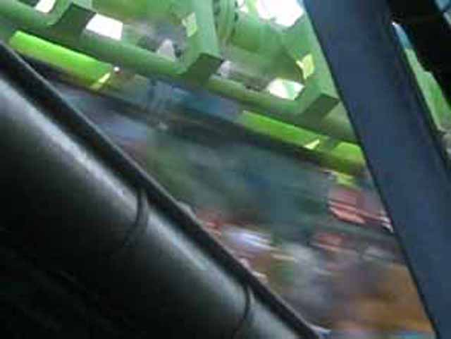

Fall 2006 Photos
Six Flags Magic MountainKnotts Berry Farm Paramounts Great America
Fall 2006 Photos is here! Not only is it the chance for me to do Collosus Backwards, Peroulis Plunge and Freefall, Its also the time I head up to Northern California and go to Paramounts Great America, The last major park in CA I need to go to. Plenty of Top Gun, Drop Zone, and Survivor. But we'll get there later. For now, here's SFMM's entrance decked for Fright Fest.
I'm Andrew. I think Goliath is cool.

Everyone loves Goliaths death helixes!

For Fright Fest, Magic Mtn turned one side of collosus backwards.
 Collosus backwards hurts like a bitch! Sorry, thats as good of a picture as I could get.
Collosus backwards hurts like a bitch! Sorry, thats as good of a picture as I could get.
What did I do to deserve this!

Too bad I won't be at SFMW to ride Medusa! At least I have scream.
Fright Fest is really crowded today.
Roundups make me melt!
There in the distance lies the first B&M Invert of this trip!
Batman is definetly more forceful than Silver Bullet! Top Gun is close though.
 Heartline Spins are cool on all B&M Inverted coasters!
Heartline Spins are cool on all B&M Inverted coasters!
When did I last ride this?
My bumper car is better than yours.
Hey chicks, wonder why I got big biceps, thats because I am a Pirate Ship loving football player!
OMG! Riddlers is SO much better than Vortex!
 Just Riddlers Loop is bigger than all of Vortex!
Just Riddlers Loop is bigger than all of Vortex!
Wee! Riddlers is alot of fun!
I love Arrow rides!

Meh, This Arrow isn't painful, I can't get brain damage.
 There is not much airtime on Goldrusher.
There is not much airtime on Goldrusher.
MUST EAT PIZZA! MUST EAT SIX FLAGS FOOD! MUST EAT PURE RAW GREASE!
Do you think I ACTUALLY care about Geese?
 Tatsu is one Crazy Good Ride!
Tatsu is one Crazy Good Ride!

Fly at the speed of fear!
 Now this hurts!
Now this hurts!
 Flashback is dead and burning in rollercoaster hell.
Flashback is dead and burning in rollercoaster hell.
I have to make it all the way to Canada! I can't give up!
I know Swashbuckler is fun and all, but can we please ride the Pirate ship next door?
All that can make this better is some Heavy Metal.

Poor Ziggy.
OH MY GOD!!! Freefall Is open!
Its true! Freefall is open! HOORAY! Its been awhile since I last rode.
Not as good as Supreme Scream or Drop Zone, but still alot of fun.
No Andrew, Freefall is not a credit, I know there is a lifthill, But you go Down it, Not up!
I need to do Dive Devil again.

Normal people waited 3 hrs for DejaVu, It took us less than 5 min to get on! (Boomerang #1! The First and best boomerang of the trip!)
 Is Superman going foreward, or backward? Email me and the 1st person to answer right gets a quarter!
Is Superman going foreward, or backward? Email me and the 1st person to answer right gets a quarter!
This is where I belong baby.
First I went to DLR Jail, Now I'm in SFMM Jail! Hey, Isn't Daniella in here?
The Balloons are the best flat ride at SFMM!
We decided to take a break from SFMM and go to Andrews house. This is not at SFMM! Andrew lives here! I Swear!
I want more food!
This is the Golbe of Death. It is really cool.
SFMM would be approved by Brian Griffin.
Hey Celeste! We're riding your favorite coaster!
Thats one cool saloon.
Knotts Berry Farm
Home